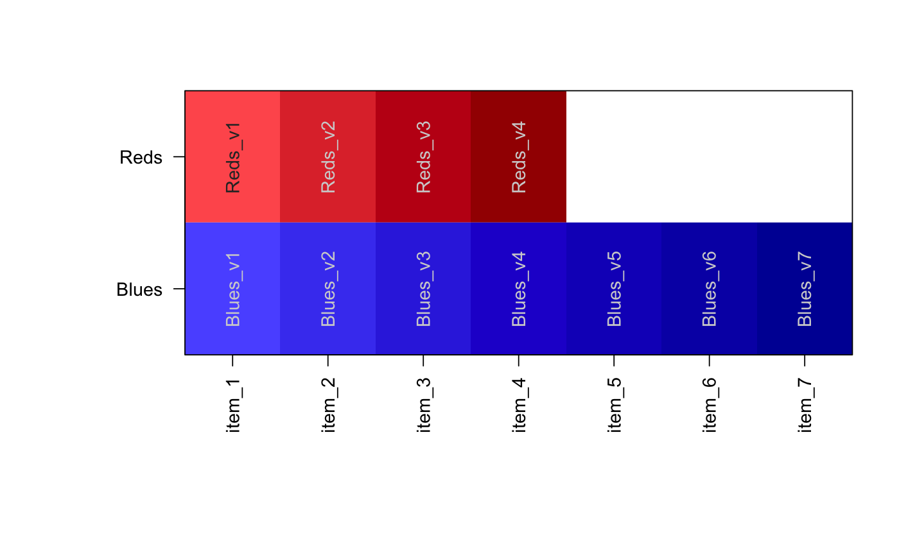
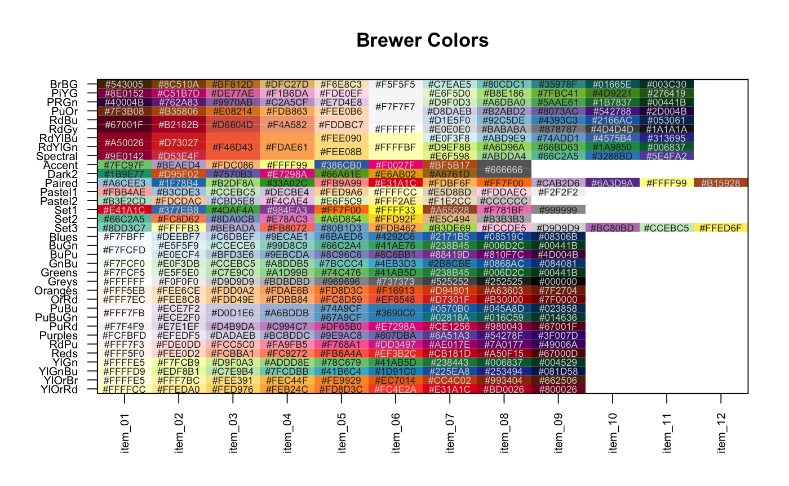
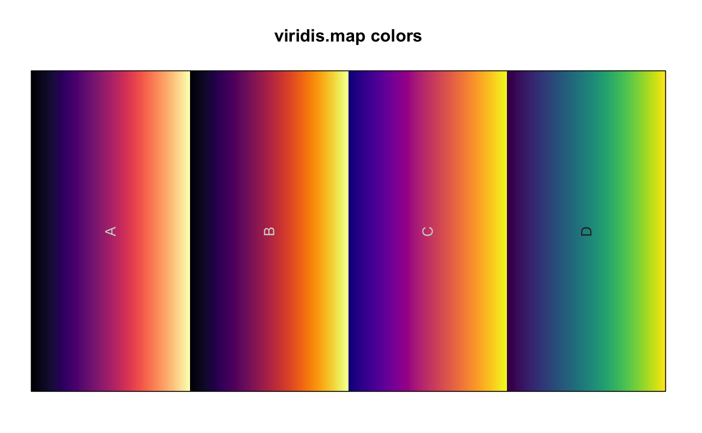
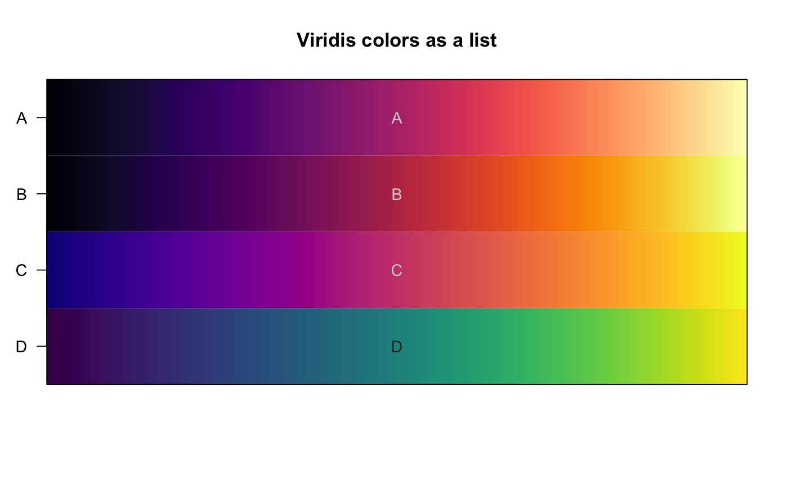

Show colors from a vector or list
showColors(x, labelCells = NULL, transpose = FALSE, srtCellnote = NULL, ...)
| x | vector of colors, or list of color vectors. |
|---|---|
| labelCells | logical whether to label colors atop the color itself. If NULL (default) it will only display labels with 40 or fewer items on either axis. |
| transpose | logical whether to transpose the colors to display top-to-bottom, instead of left-to-right. |
| srtCellnote | numerical angle to rotate text when
|
| ... | additional parameters are sent to |
invisible color matrix used in imageByColors.
This function simply displays colors for review, using
imageByColors to display colors and labels across the
plot space.
if (suppressPackageStartupMessages(require(RColorBrewer))) { y <- lapply(nameVector(RColorBrewer:::namelist), function(i){ brewer.pal(20,i); }); showColors(y, cexCellnote=0.6, cex.axis=0.7, main="Brewer Colors"); }if (suppressPackageStartupMessages(require(viridis))) { # Grab the full viridis color map z <- rgb2col(viridis.map[,c("R","G","B")]); # label the colors using viridis.map$opt names(z) <- viridis.map$opt; showColors(z, labelCells=TRUE, xaxt="n", main="viridis.map colors"); # or split the colors into a list zl <- split(z, viridis.map[,"opt"]); showColors(zl, labelCells=TRUE, srtCellnote=0, xaxt="n", main="Viridis colors as a list"); }